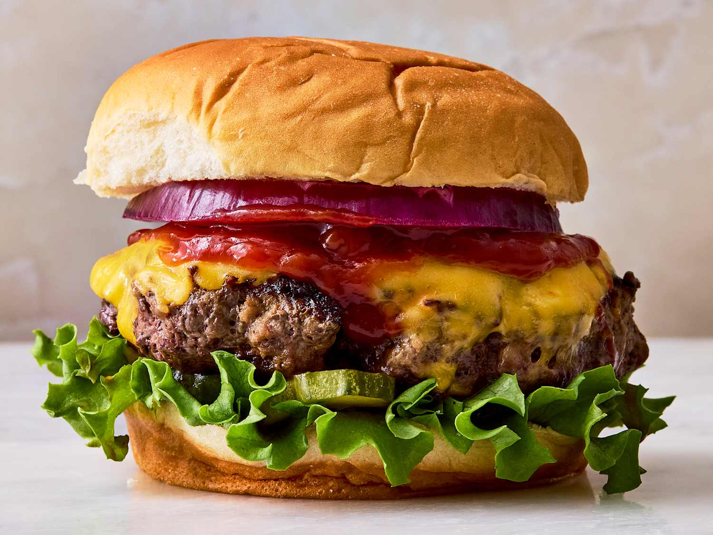

Hamburger Recipe

This is a kid-friendly version of the original with all the taste and very little effort. Chicken, ham, and Swiss cheese are cooked until melty and served on toasted onion buns with a creamy honey mustard sauce. No one could possibly resist this sandwich, especially a Mom with only one pan to clean.
Ingredients:
- 1 cup sour cream
- ¼ cup prepared yellow mustard
- ¼ cup honey
- 6 skinless, boneless chicken breast halves - pounded flat
- 2 teaspoons onion powder
- 12 slices deli ham
- 12 slices Swiss cheese
- 12 onion buns
Directions:
- the oven's broiler, and set the oven rack about 6 inches from the heat source. Whisk together sour cream, yellow mustard, and honey in a small bowl. Refrigerate until ready to use.
-
Cut each chicken breast into 2 equal pieces. Sprinkle both sides of chicken breasts with onion powder. Place a large skillet over medium-high heat; coat with non-stick cooking spray. Cook chicken breasts until browned on bottom. Turn chicken, and top with a slice of ham and a slice of cheese. Continue to cook until the chicken is cooked though and the cheese is melted.
- Place rolls, cut side up, under broiler. Toast until lightly browned.
- Top each chicken cordon bleu burger with a tablespoon of honey-mustard sauce, and serve on toasted onion rolls.
Back to Home